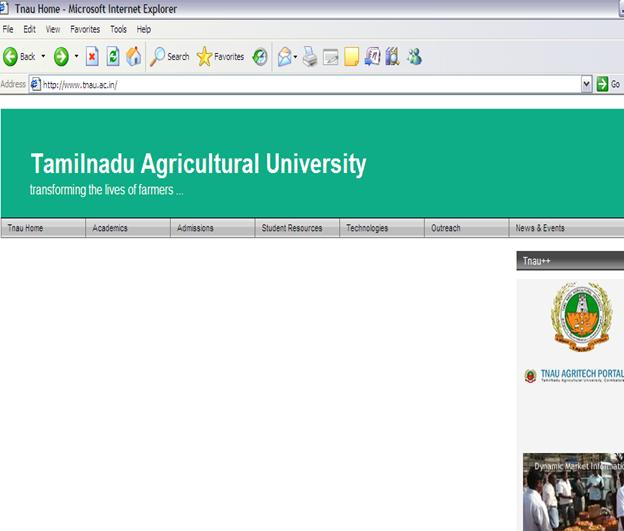

STAM 102 :: Lecture 15 :: Internet: World Wide Web (WWW), Concepts

Internet
- Network of interconnected computers around the world.
- A network of computer networks which operates world-wide using a common set of communications protocols.
- a computer network consisting of a worldwide network of computer networks that use the TCP/IP network protocols to facilitate data transmission and exchange.
- Visualization of the various routes through a portion of the Internet:
What do we need to get connected to internet?
- Getting on the Internet requires:
- Computer
- Modem
- Telephone Line
- Internet Service Provider (ISP)
- Communication Software
Modem and Telephone Line
|
|
|
Internet Service Provider (ISP)
- An Internet Service Provider (ISP) is a company that allow you to use their internet connection for a price.
- When you register with an ISP the followings are given:
- Username
- A unique name that identifies you.
- Password
- A secret code that prevents other people from using your account.
Some Popular Internet Service Providers
- AT&T WorldNet
- Microsoft Network
- America Online
- In India:
- VSNL (Videsh Sanchar Nigam Limited
- MTNL (Mahanagar Telecom Nigam Limited)
- BSNL (Bharat Sanchar Nigam Limited)
- Satyam Onlile
Communication Software
- Computer needs communicate
- on software to allow you to get connected to, and interact with, the Internet.
- Communication software is of two types:
- Software that Helps Establish Basic Internet Connectivity
- Software that helps to browse, access e-mail etc.
World Wide Web
"The World Wide Web is the universe of network-accessible information, an embodiment of human knowledge." |
|
|
- The basic idea of the WWW was to merge the technologies of personal computers, computer networking and hypertext into a powerful and easy to use global information system.
- The World Wide Web, abbreviated as WWW and commonly known as The Web, is a system of interlinked hypertext documents contained on the Internet.
- With a web browser, one can view web pages that may contain text, images, videos, and other multimedia and navigate between them by using hyperlinks.
Hypertext
- Hypertext is text displayed on a computer or other electronic device with references (hyperlinks) to other text that the reader can immediately access, usually by a mouse click or keypress sequence.
- Apart from running text, hypertext may contain tables, images and other presentational devices. Hypertext is the underlying concept defining the structure of the World Wide Web, making it an easy-to-use and flexible format to share information over the Internet.
Web Browser
- A web browser is a software application for retrieving, presenting, and traversing information resources on the World Wide Web. An information resource is identified by a Uniform Resource Locator (URL) and may be a web page, image, video, or other piece of content.
- Example of Web Browser:
- Mosaic
- Internet Explorer
- Netscape Navigator
- Mozilla Firefox
Web Page and Websites
- W3 contains several millions of pages of information. Each of these pages is called a Web Page.
- A webpage or web page is a document or resource of information that is suitable for the World Wide Web and can be accessed through a web browser and displayed on a computer screen.
- A web page can contain text, pictures, sound, animation and video.
- A group of related web pages that are linked together form a Web Site.
- The first page of a web site is called the Home Page.
- The Home Page shown below is the Home Page of the official website of Tail Nadu Agriculture University.

Universal Resource Locator
|
|

Example: http://www.usd.edu/trio/tut/start/url.html |
|
http:// |
protocol – rules through which transmission takes place over the internet. |
www.usd.edu/ |
server name - computer domain name |
trio/tut/start/ |
pathname to the directory you are requesting |
url.html |
filename you are requesting |
Search Engine
- A web search engine is designed to search for information on the World Wide Web. The search results are usually presented in a list of results and are commonly called hits.
- Few examples of web search engines are:
Google.com |
|
Ask.com |
|
Yahoo.com |
|
Bing.com |
|
TripleMe.com |
|
Shopzilla.com |
|

{kind=link}
{kind=link}
| Download this lecture as PDF here |